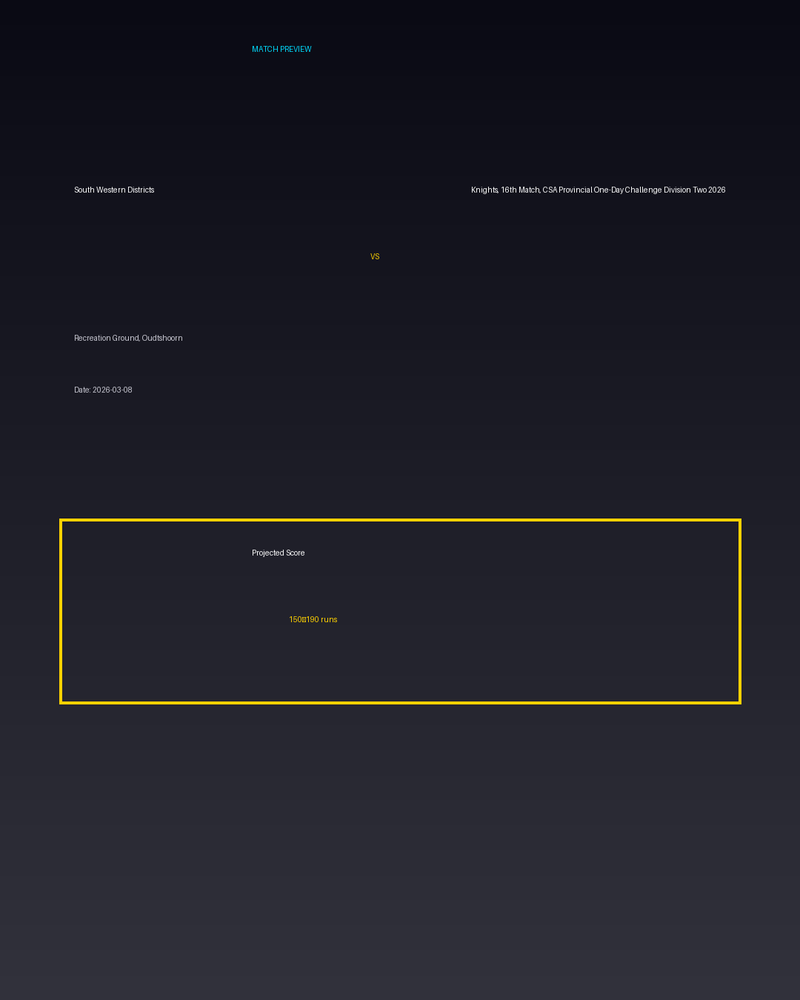

South Western Districts vs Knights, 16th Match, CSA Provincial One-Day Challenge Division Two 2026
Date: 2026-03-08
Venue: Recreation Ground, Oudtshoorn


Form Guide
South Western Districts: 🟩 🟥 🟩 🟩 🟥
Knights, 16th Match, CSA Provincial One-Day Challenge Division Two 2026: 🟥 🟩 🟥 🟥 🟩
Pitch Report
Balanced wicket with moderate scoring conditions.
Projected Score
150–190 runs
Key Players
- South Western Districts Key Batter — Batsman
- South Western Districts Strike Bowler — Bowler
- Knights, 16th Match, CSA Provincial One-Day Challenge Division Two 2026 Key Batter — Batsman
- Knights, 16th Match, CSA Provincial One-Day Challenge Division Two 2026 Strike Bowler — Bowler
Advanced Win Probability
South Western Districts: 64.3%
Knights, 16th Match, CSA Provincial One-Day Challenge Division Two 2026: 35.7%
AI Match Prediction
Based on venue conditions, a projected scoring range of 150–190 runs, recent form (with South Western Districts appearing slightly stronger), and the pitch profile ('Balanced wicket with moderate scoring conditions.'), this matchup appears to present South Western Districts entering as clear favorites. Early momentum and top-order execution will likely determine the winner.
